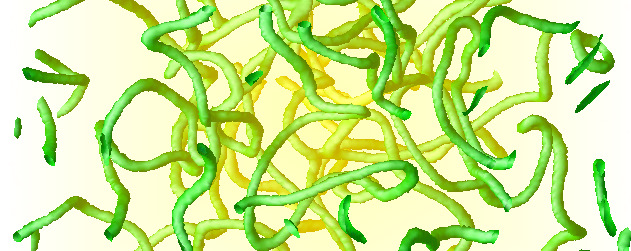
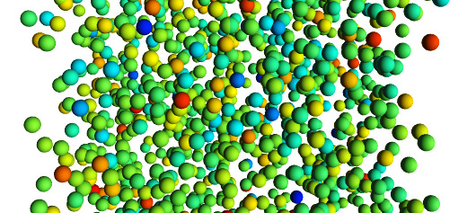
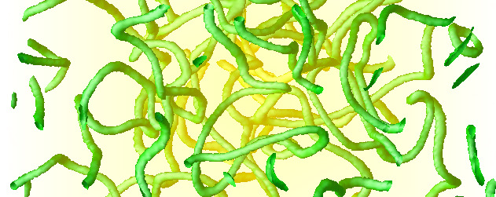
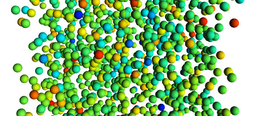

I work at Asutosh College affiliated to the University of Calcutta. Previously, I had worked at Centre for
Condensed Matter Theory, IISc Bangalore as a DST-INSPIRE faculty. I had worked as Assistant Research Scientist at
Courant Institute (NYU) with Prof. Aleks Donev.
Way before that, I was a DAAD-Helmholtz postdoctoral fellow at Institute of Materials (Köln) and University of
Konstanz. I obtained doctorate in Soft Condensed Matter Theory from Matscience, Chennai after working with Prof.
Ronojoy Adhikari. I've also worked
towards Masters thesis at Center for Theoretical Studies at IIT Kharagpur.
Apart from UG teaching, I work on various (a) field theoretic problems and (b) particulate computational problems arising in soft materials at equilibrium and non-equilibrium scenario, scattered mostly in studying of fluctuation effects as well as response to external perturbation of isotropic and anisotropic materials.
News:
- Anonymous reviewer commented on fluctuating electronematics, "This is an extremely interesting outcome as it represents an easy and practical way to control defects motion, a long-standing open problem in liquid crystals" (2018).
- Nucleation in anisotropic liquids is highlighted in a Review Article and Featured in Science Letter (2017).
- DST-INSPIRE Faculty is awarded at IISc Bangalore & Asutosh College, Kolkata (2015-2020).
- Multicomponent thermal liquids is selected for Francois-Naftali-Frenkiel Award by Physics of Fluids and featured in Phys.org (2015).
- Bauschinger effect in dense supercooled melts appeared in Special Topics on Glass Transition (2013).


 


